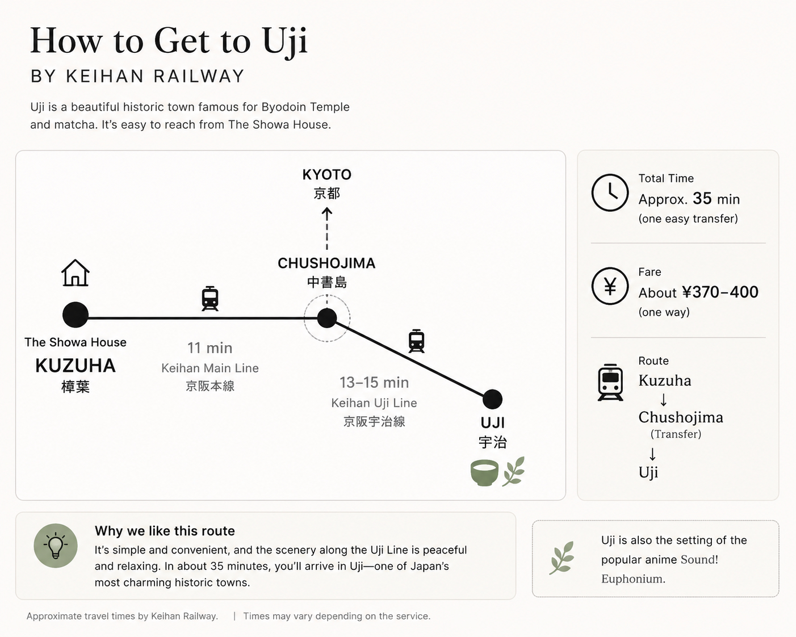

3–4 days mainly exploring Kyoto
Kyoto
← Home
Kyoto or Osaka?
WHERE TO STAY · KANSAI TRAVEL GUIDE
Kyoto or Osaka?
Or somewhere in between?
A practical guide to choosing the best base for your Kansai trip
If most of your trip is in Kyoto, staying in Kyoto is sensible. If your plans center on Osaka, its food, nightlife, and neighborhoods, Osaka is usually the practical choice.
But if your itinerary includes Kyoto, Osaka, Uji, and Nara, there is a third option worth comparing: staying somewhere in between.
This is not a claim that the middle is always best. The right base depends on your destinations, railway lines, pace, and how often you want to change accommodation.

START HERE
Your 30-second decision
Use this as a first filter, then check the stations and routes for your own itinerary.
USJ, Dotonbori, nightlife, and Osaka neighborhoods
OsakaKyoto and Osaka in roughly equal measure
BetweenKyoto + Osaka + Uji + Nara
Between5+ nights and you prefer not to change hotels
BetweenSightseeing by day and ordinary Japan at night
BetweenTHE WHOLE JOURNEY
Don’t count nights. Think about the whole trip.
Splitting five nights into two nights in Osaka and three in Kyoto can look efficient on paper. Yet every change of accommodation creates another sequence:
- Packing
- Check-out
- Moving luggage
- Station transfer
- Luggage storage
- Check-in
- Unpacking
With one base, you can leave with a small day bag and come back to the same place each evening. The point is not that a middle base always gives the shortest individual journey.
A middle base can make the overall trip simpler.

LOCATION IS NOT ENOUGH
Not every place “in between” works the same way.
A town may sit halfway between Kyoto and Osaka on a map without connecting efficiently to the places on your list. Compare the railway network and your actual destinations—not geography alone.
| Travel question | Takatsuki / JR & Hankyu | Keihan corridor |
|---|---|---|
| Kyoto side | Strong for Kyoto Station | Strong for Fushimi, Higashiyama, and Gion |
| Osaka side | Strong for Osaka Station / Umeda | Strong for Kyobashi / Yodoyabashi |
| Uji | Usually via the Kyoto side | Easy connection via Chushojima |
| Nara | Via Kyoto or Osaka connections | Combination with Kintetsu or other connections |
| Travel style | City-to-city | Sightseeing corridor |
| Best for | Kyoto Station + Umeda | Eastern Kyoto + Osaka + Uji |
Takatsuki is an excellent base between Kyoto Station and Osaka Station.
The Keihan corridor is interesting as a base between Kyoto’s sightseeing districts and central Osaka.
Don’t choose the fastest station. Choose the railway that fits your trip.
THE KEIHAN CORRIDOR
Think beyond Kyoto Station.
Many travelers are not going to Kyoto Station itself. Their days are built around the eastern side of Kyoto: Fushimi Inari, Tofukuji, Kiyomizu and Higashiyama, and Gion.
Yodoyabashi · Kyobashi
Useful central Osaka stations for business districts, river areas, Osaka Castle connections, and onward city travel.
Fushimi · Higashiyama · Gion
Stations along the sightseeing side of Kyoto, with walks or local connections to major eastern districts.
Change at Chushojima
The Keihan Uji Line branches toward Uji, making the river, Byodoin, and tea streets a natural day trip.

NEXT: PLAN THE DAYS
What would a trip like this look like?
This page helps you decide where to stay. These itineraries show what you might do once you have chosen a base.

SLOW JAPAN
Sightseeing by day, ordinary Japan at night.
A middle base can offer more than railway convenience. It may also give you time for a supermarket visit, a neighborhood walk, dinner at a local restaurant, laundry, or a slow morning before the next train.
These are not substitutes for Kyoto, Osaka, Uji, or Nara. They are the small moments around the sightseeing—the parts of a trip that can make a place feel familiar.
FINAL CHECK
Is a middle base right for you?
- I want to visit both Kyoto and Osaka.
- I am staying around five nights or longer.
- I also want to visit Uji or Nara.
- I do not want to move my luggage several times.
- I prefer a home-like stay over changing hotels.
- I want to experience ordinary Japan as well as famous sights.
If you answered yes to three or more, compare a middle base before automatically booking Kyoto or Osaka.
ONE EXAMPLE OF THIS WAY OF TRAVELLING
The Showa House
The Showa House is one example of the stay-between strategy: a private Japanese house for one group at a time, in a residential neighborhood about a 10-minute walk from a Keihan station.
Its tatami rooms and futon offer a different kind of stay from a city hotel, while the railway makes travel possible in both the Kyoto and Osaka directions. It will not suit every itinerary—but for travelers who value one home-like base and local evenings, it may be worth considering.
- Private Japanese house
- One group at a time
- Tatami and futon
- Residential neighborhood
- About 10 minutes on foot from Kuzuha Station

Don’t ask only: “Kyoto or Osaka?”
Ask: “What base makes my whole trip better?”